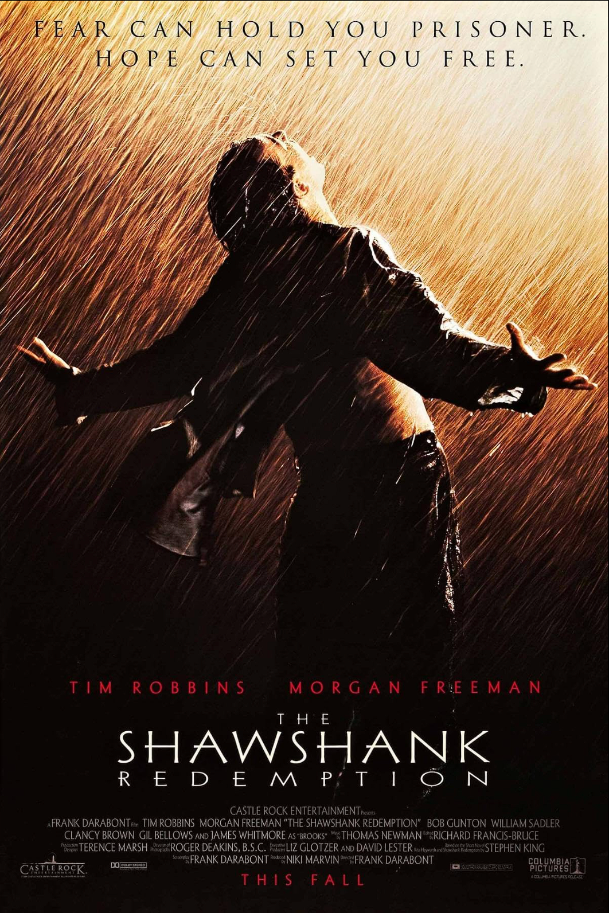

топ 3 фильмf по версии "IMBD"
Cамые высокооценненные фильмы
Ростислав рекомендует

Побег из Шоушенга, США, Режиссер: Фрэнк Дарабонт
«Побег из Шоушенка» — драма 1994 года режиссёра Фрэнка Дарабонта, снятая по рассказу Стивена Кинга. Действие разворачивается в тюрьме строгого режима, куда попадает молодой банкир, осуждённый за убийство. В суровых условиях заключения он сталкивается с несправедливостью, жестокостью и одиночеством, но продолжает искать смысл и свет даже за решёткой.
Фильм несёт в себе мощный посыл о силе надежды, достоинстве в самых тяжёлых обстоятельствах и ценности человеческой дружбы. Без излишней драматизации он показывает, как внутренняя стойкость может изменить жизнь — как самого человека, так и окружающих.
«Побег из Шоушенка» получил широкое признание критиков и зрителей и стал одним из самых высоко оценённых фильмов в истории кинематографа. Несмотря на то, что на момент премьеры он не имел коммерческого успеха и не получил «Оскар» в главных номинациях, со временем он приобрёл статус культовой ленты. Сегодня он регулярно возглавляет рейтинги лучших фильмов всех времён, в том числе IMDb Top 250.
 Крёстный отец, США, Режиссер: Фрэнсис Форд Коппола
Крёстный отец, США, Режиссер: Фрэнсис Форд Коппола
«Крёстный отец» — культовая криминальная драма 1972 года режиссёра Фрэнсиса Форда Копполы, снятая по одноимённому роману Марио Пьюзо. Фильм рассказывает историю влиятельной нью-йоркской мафиозной семьи Корлеоне, чья власть и влияние подвергаются испытанию в условиях жестокой борьбы за контроль над криминальным миром. В центре сюжета — передача эстафеты от главы семьи его сыну, который вынужден сделать непростой выбор между моралью и долгом.
Фильм затрагивает сложные темы семьи, власти, предательства и морального выбора. Несмотря на жанр гангстерского фильма, «Крёстный отец» — это глубокая драма о человеческой природе, где каждое решение имеет последствия, а верность часто стоит дороже жизни.
«Крёстный отец» считается одним из величайших фильмов в истории кинематографа. Он получил три премии «Оскар», в том числе за лучший фильм и лучший сценарий, а также оказал огромное влияние на мировое кино. На сегодняшний день эта лента стабильно входит в тройку лучших фильмов по версии IMDb и других авторитетных рейтингов.
 Темный Рыцарь, США, Режиссер: Кристофер Нолан
Темный Рыцарь, США, Режиссер: Кристофер Нолан
«Тёмный рыцарь» — супергеройский боевик 2008 года режиссёра Кристофера Нолана, второй фильм трилогии о Бэтмене. Действие разворачивается в Готэме, где миллиардер Брюс Уэйн продолжает борьбу с преступностью в образе Тёмного рыцаря. Однако его миссия оказывается под угрозой из-за появления загадочного и харизматичного преступника — Джокера, чьи действия ставят под сомнение саму идею справедливости и порядка.
Фильм выходит далеко за рамки адаптации комиксов и поднимает вопросы морали, жертвенности и границ между хаосом и законом. Вместо чёрно-белой борьбы добра и зла он предлагает зрителю сложную, многогранную картину мира, где герои вынуждены делать тяжёлый выбор в условиях всё возрастающего давления.
«Тёмный рыцарь» получил восторженные отзывы критиков и стал одним из самых успешных и влиятельных фильмов своего времени. Он получил два «Оскара», в том числе за лучшую мужскую роль второго плана (Хит Леджер за роль Джокера), и до сих пор остаётся эталоном жанра. В рейтингах IMDb и других авторитетных источников картина регулярно входит в топ-10 лучших фильмов всех времён.